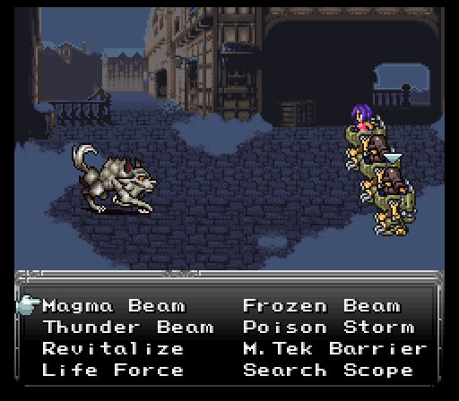
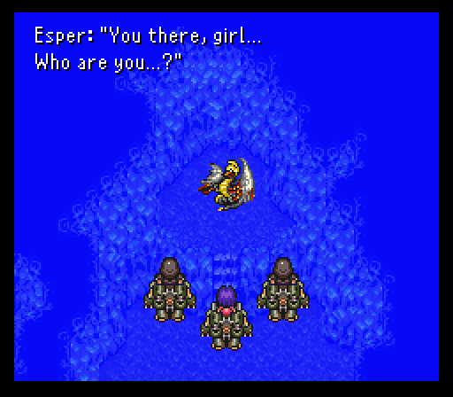
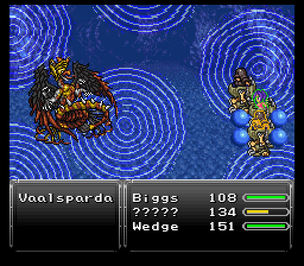
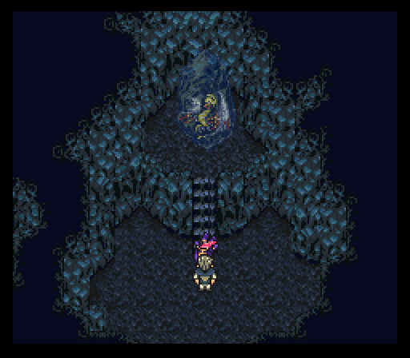
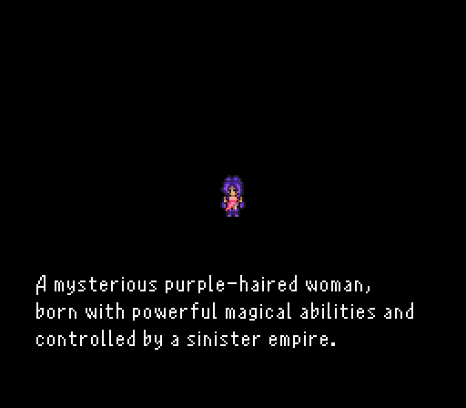
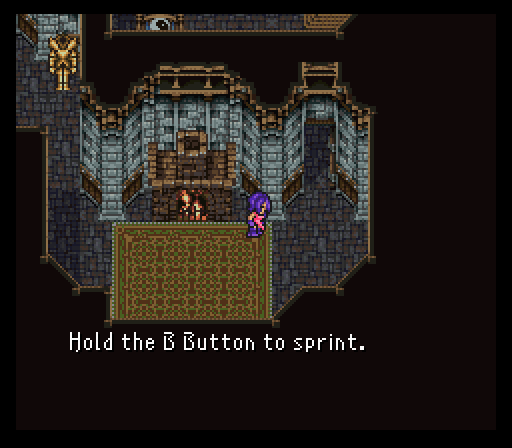
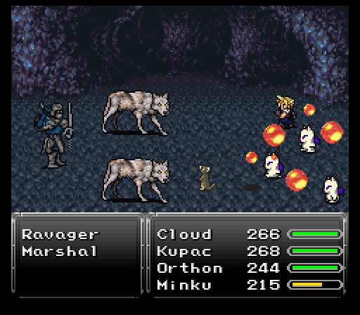

Part 1: Land of the Fraust
Choosing a difficulty
Before the actual game starts, you'll be asked to choose which difficulty you'd like to play on. For this playthrough, I will be choosing the hardest: Insane. But it is highly recommended to go with a lesser one, especially if you're a first-time player, not on a New Game +, or do not wish to partake in much grinding and/or become frustrated. The official "default" recommended difficulty according to the mod's creator is the second one: Hardcore. While the first one, Regular, can be compared to the original game's level of difficulty. Extreme is quite challenging indeed, but Insane is where things ramp up dramatically.
Although the overall strategy won't change much between difficulties, the boss AI features stronger attacks for both Expert and Insane, and most bosses will have 'extra lives', meaning you will need to completely drain the hit points (hp) once again when they are depleted. Also you gain different amounts of experience (exp) and gil (money) from monsters, with higher amounts awarded for higher difficulties. So with all that in mind, go ahead and choose whichever difficulty you feel comfortable with and let's get this show on the road!
Note: You can change the difficulty later on by talking to a certain NPC inside the Developers' House.

Fraust
Just like almost every FF6 mod in existence, this one too begins at the snowy cliff overlooking a town. The town, however, has been renamed to Fraust, and that is where our journey begins. We arrive in town in control of three party members. One is the wayward sorceress the Blackthorn Empire cherishes so much while the others are staple FF standbys Biggs & Wedge. Before we get going, note that the battle speed can be adjusted in the Config menu and it now effects both the monsters and the party. Lower number is faster, higher is slower.


Our first challenge is the lone Dire Wolf. Its normal attacks are no slouch and it has quite a bit of hp. Luckily the Magitek Armors of all three characters come equipped with some strong attacks via the Magitek command. Being weak to fire, the wolf gets dropped in two or three Magma Beams. Less if you put the Magitek Armors in the frontline since the beams are effected by row. In the back row, physical damage and attack power are halved, but certain special attacks (skills) become 25% weaker as well. It would take just one Magma Beam on a lower difficulty, but keep in mind that I'm playing on Insane, so everything will take longer to kill.
Regarding the Magitek Armor skills, they have six unique skills shared between them. Three elemental beams in fire, thunder, or ice varieties, Revitalize (Greatly heals a target and cures most negative ailments), Life Force (Revives a KO'd target), and M-Tek Barrier (Grants Protect & Shell statuses to a target. Protect raises physical defense, Shell boosts magical defense).
The other two skills are different. For Biggs & Wedge, they have Poison Storm (AoE poison elemental attack, inflicts poison) & Search Scope (Gives data on the enemy's level/hp/mp/elemental weaknesses). Our wayward sorceress replaces those two skills with Aerods (Wind/Lightning elemental AoE attack) and M-Tek Missile (Single target, non-elemental, VERY powerful for the early game).
That all being said, despite the much bulkier and nastier enemies, the fixed encounters aren't that vicious. The random Guard enemies can be dropped with a couple Poison Storms and the pincer attack can be cleaned up pretty easily so long as the sorceress doesn't get focus fired hard.
The real danger? The final fixed battle before the mine entrance. You face off against four Prinnies from the Disgaea series. Their appearance best not fool you because they are extremely dangerous. Snowball, if it hits, halves a target's current hp while Prinny Barrage is just a standard strong physical strike. The real danger? They can self destruct, killing themselves while dealing damage equal to their remaining hp to a single target. Worse yet, they're immune to Poison Storm and Magma Beam seems very apt to causing them to self destruct. As they are weak to lightning, you'll want to use Aerods and Thunder Beam on them.

Once they're out of the way, the mine entry is refreshingly calm. You'll probably need to spend one fight just to get everyone back into tip top shape though before the boss, Fireweaver.
Fireweaver is basically a fire themed Whelk, but can potentially act twice in a turn. Given some of its powerful fire based attacks like Blaze & Wildfire, you are going to need M-Tek Barriers up quickly and stay as close to full as possible.
Thankfully, you're pretty safe just having everyone fire off an attack on their first turn. After that, get the M-Tek Barriers up because Fireweaver will retreat inside its abdomen. Hit the abdomen AT ALL and your team gets a Meltdown in the face (on Insane difficulty), liking wiping everyone unless you grinded everyone to 500+ hp max. Thankfully it only seems to use Web Shot (Damage + slow status to a target) while inside the abdomen.
You'll want to use M. Tek Missile with the sorceress, and Frozen Beam with Biggs & Wedge of course, since fire is weak to ice.
Keep in mind that in this mod, beneficial statuses such as Protect and Shell will come off after a certain amount of time, so you'll need to reapply them when necessary. This also goes for Slow, and applies to monsters as well. Equipment and Relics, however, will keep the status on permanently.

All things considered, this isn't too rough of a first boss. Don't get greedy with the attacks and you'll pull through without too much issue. If anyone gets KO'd, use Life Force and heal them back up with Revitalize, then reapply M-Tek Barrier. The closer to death the Fireweaver gets the stronger his attacks become, so try to keep on the offensive as much as possible or risk becoming overwhelmed. After the battle is over, go back to the save point and save your game before proceeding forward... trust me.
Note: White numerals appearing during battle are hp damage points. Green numerals are hp recovery points. Pink numerals are mp damage points. Blue numerals are mp recovery points.
The escape
Since the last segment, our wayward sorceress did some solo grinding. Seems crazy that I'd do that even before getting out of the intro area, but there's one fight upcoming that's going to be a nightmare if I don't bulk up now.
Speaking of levels, they have a chance to grant +1 to any of the four main stats (Might which governs physical damage, Speed which determines how fast the user's atb gauge fills, Stamina which lets the user have a better chance to resist some spells as well as influencing hp growth slightly, and Mag. Pwr which governs magical damage). You may get no stat increases or possibly get every stat increased. It can be gamed if you're into some saving/reloading business. Nothing that you have to do though to survive.
That being said, our intrepid trio of soldiers finally make it to the esper they were tasked by crazy loony lunatic Kefka to locate. Unfortunately for them it decided to wake up from its siesta while frozen in ice, seems to be interested in the sorceress, then attacks.
Vaalsparda, while having some decent physical power, including its stronger physical strike called Psychic Beam, is more notable for its elemental assault. It can cast tier 1 & 2 basic elemental spells that shouldn't be horrendously damaging, but you'll want to keep your hp topped off regardless. It can cast Rippler too which swaps its status buffs & ailments with another chosen target, and since he starts with Slow status and you most likely have Protect and Shell thanks to M-Tek Barrier, that's bad. So you may need to reapply your M-Tek Barrier, but otherwise shouldn't be too much of an issue.
Sometime after the battle has been underway, Vaalsparda will use Reverse Polarity, switching the rows of all characters. Even in the front row, its physicals aren't too painful to endure, especially with M-Tek Barriers up. However, this is the point where you need to heal up because on the next turn it gets, Vaalsparda will launch a tier 3 elemental spell, likely at everyone, and do ~150-160 damage with shields up.
Honestly, this fight isn't too bad, maybe even a pinch easier than Fireweaver since you don't have to worry about a random Meltdown counter due to bad attack timing. Just keep topped off and have Biggs & Wedge spam elemental beam attacks after using Poison Storm, the boss's weakness, while the sorceress spams her missiles. The poison damage 'tics' from Poison Storm will keep increasing, so try to keep him poisoned, but avoid poisoning him three times or he'll unleash all the accumulated poisonous energy and cast Plague, which hurts a decent amount and poisons everyone.
After dealing enough damage, a cutscene begins. Vaalsparda emits some serious light, enough to make Biggs & Wedge go poof. As for the sorceress? She apparently resonates with the esper, then her Magitek Armor explodes. Capital!
Luckily for her, someone decided to come exploring the cavern and took her back to his house. When you gain control again, you can check around the house to find an Elixir in the clock and an Iron Sword in the suit of armor before talking to this man, Arvis.
As it turns out, our wayward sorceress was being controlled by something called a Slave Crown, basically making the wearer a soulless being that can be ordered around by anyone. It is here that we finally get a name for our sorceress, Aurora.
Aurora's respite is short lived as some guards come knocking for her. Arvis is going to attempt to keep them at bay while Aurora escapes through the mines. Alone. Without her godlike Magitek Armor skills. At the very least she manages to make it to the save point and grab some protection in the form of a Buckler on the way. Don't forget that you can sprint (move faster) by holding down the B Button. And when selecting a spell, press the L or R Button to select multiple targets.
As for the chests strewn about, this mod does away with the whole concept of chests that have better loot in them the longer you refrain from opening them, so open away at every one you see. And there are treasures to be found all over the place, so be sure to search every nook and cranny. For instance the very spot the merchant was standing at before running away in terror after the bridge collapses. After that, flip the switch to open the door and make your way through a new room, claiming an all-important potion from the chest as an incentive.
Eventually, Aurora gets cornered by several guards, but somehow manages to find the one spot in the cavern with a weak floor and falls through it to the floor below and passes out, inadvertently breaking up a fight between a moogle and a prinny. That's twice now she's done this. If she's trying to make a bid for the most times oneself gets his or her ass kicked in a cutscene, she's starting out very strong, heh.

While she's passed out, she has a vision of how she became a puppet for Kefka. Nevermind the fact that the crown could be taken off and her senses returned relatively to normal.
There's also the matter of Project Genesis, all headed by one Professor Oak. No longer interested in the field of pokemon, he now makes a living studying magic and trying to get a big lead in the mechanical business.

Once the dream ends, the scene returns to Arvis's house and one special individual making a very classy entrance via the roof. It's none other than Final Fantasy 7's buster sword wielding Cloud Strife. As it turns out, he's a mercenary doing work for profit. His target is one Arvis requested...to rescue Aurora and keep her safe. Seems simple, right?

Well, once Cloud gets to the still unconscious Aurora, a very determined elite guard decides to send out the Prinny army to deal with things. However, they're KINDA invading on the turf of the local moogle clan, causing one of their own, Mog, along with a bunch of other moogles to help Cloud fend off the ensuing penguin horde.

The entire reason I went through the trouble to level Aurora to 10, besides playing on Insane difficulty, is to make Cloud begin at the level he does here, allowing him access to the third of his trademark Limit command skills.
The Limit command is exactly like Cyan's SwdTech command from vanilla, except it moves faster now which is a most welcomed change. Select it and a meter appears. Hit the confirm button again when the bar hits the desired level to unleash a special attack. Lv1 is just a strong single target strike (Braver) while his lv2 skill activates a stance that will stay charged. Any enemy with a physical strike that targets Cloud will trigger the attack Climhazzard.
As for the lv3 skill, it's Blade Beam which does damage to one target and inflicts seizure to do some minor damage to the enemy every so often. Best of all, it's a ranged attack.
Limit Break:
- Braver - Swift leaping slash to enemy. (learned at level 1)
- Climhazzard - Magically charged counterattack. (learned at level 6)
- Blade Beam - Seizure-inducing magic-type attack. (learned at level 12)
- Omnislash - Fierce 4-strike combo. (learned at level 17)
- Force Steal - Absorbs an enemy's hp/mp. (learned at level 25)
- Meteor Sword - Meteors attack and halt enemies. (learned at level 36)
- Finish Touch - Creates a large twister of death. (learned at level 50)
- Omnislash V5 - Insanely powerful 4-strike combo. (learned at level 68)
Strategy here for the assault? Focus on the Prinnies first and foremost. Without the Magitek Armors, you need to go FAST on either killing them or lowering their health enough so the self destruct doesn't murder someone. In this mod, while in battle you can hold the X Button down instead of pressing it to switch between the 'Steal' and 'Throw' commands. Keep this in mind for later characters with Steal/Throw as well. You'll want to put any moogles with the Miracle skill or long range weapons in the back row.
Healing may be an issue here, but some of the moogles come packing unique commands, one of them being Miracle. This casts Cure, Cura, or Curaga at random to the whole party. Another is Inverse, which is basically Sketch from the original game, but attempts to use spells that the monster is elementally weak against. It can be a bit hit or miss, but is sometimes worth using.
As for the one unique moogle of the bunch...Mog's capable of some mad dance moves, having access to eight dance moves, each of which have their own unique skills that are chosen at random when you select them. Air Guitar can potentially dish out some nice AoE damage while Cavern Strut can be learned fighting in caverns and isn't quite as useful right now.

The most important thing to keep in mind as you thin the horde...try to limit your item usage. You'll need everything for the boss, Marshal.
Marshal brings some serious physical power to the table with his strong physical strike, Slayer Edge, capable of doing 150+ damage to back row characters. He can also use Energy Web to inflict stop on a target.
As you do damage to the elite guard, he can start tossing in heals and even using a one time buff called Mongoose to apply haste to himself and his wolflike Ravager buddies, which you could then attempt to dispel by way of the Moogle that has a Diffusal Rod equipped (randomly casts Dispel upon hit), but since that is the Miracle moogle it might not be worth it. Marshal's cohorts do decent damage and have Bloodfest, healing them for the amount of damage inflicted. If you are using Cloud's party you can simply slice them in half with a regular attack from the Buster Sword, if luck is on your side.
It is of the utmost importance to use Inverse on Marshal with the hope that it'll cast Mongoose on your party instead, as this greatly levels the playing field.
This fight is not easy at all. Not necessarily due to the high damage Marshal can dish out with Slayer Edge, but because the fight can drag on for a long time, especially with the random heals. Do not be afraid to use that Elixir if you find yourself in a pickle and need emergency healing.
Having finally made it out of the hellhole that was Fraust, the danger factor is going to be quite a bit less severe for our duo.
Before continuing on, there's a lovely cat merchant from Secret of Mana by the name of Neko at Fraust's entrance. He sells some unique equipment, but at higher than usual prices. Regardless, I picked up a Thief Knife from him. When attacking normally, there's a chance to perform a steal alongside the physical strike.

It's also worth it to check out the Developers' House, which used to be the Classroom in the original game. Besides getting to see most of the people associated with this mod, there's a couple treasures to take and the NPCs do a variety of interesting things, including healing the party's hp and mp, and changing the difficulty setting if need be. Enough of that though, time to take the walk to our next destination!